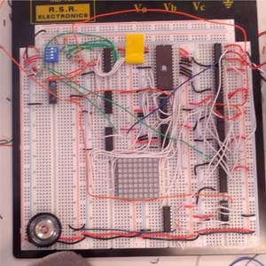
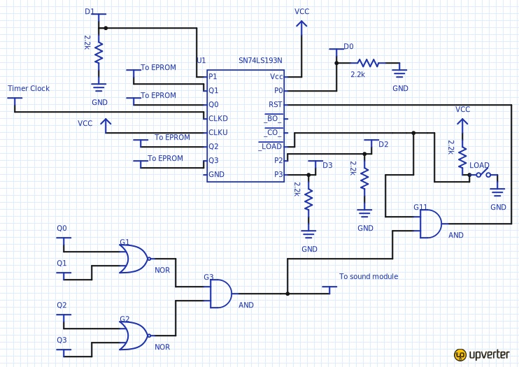
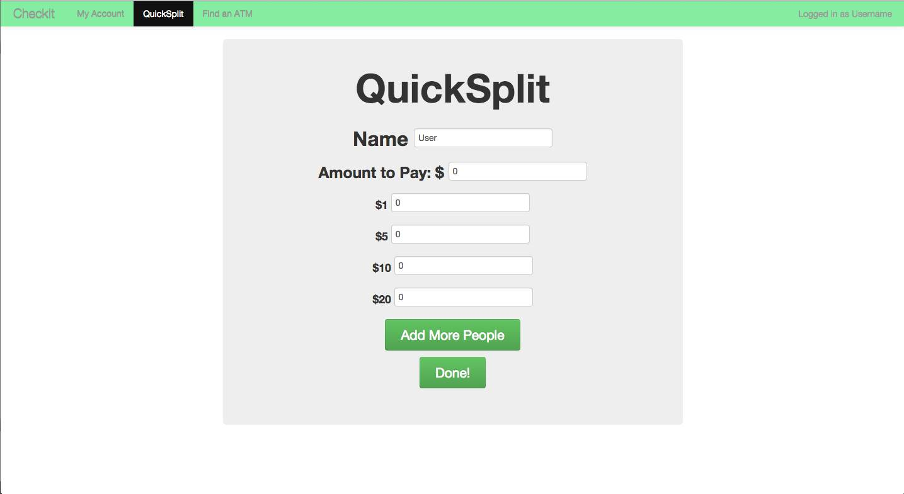

<div class="container">
	<div class = "row">
		 <div class = "col-sm-1"> </div>
		<div class = "col-sm-9"> 
			<div class ="well" id ="swarmbots">
				<h3> Swarmbots </h3>
				<div class ="row">
					<div class = "col-xs-12">
						<h5> Description </h5>
						<p> The goal of this project was to create two autonomous robots that could work together to complete a course. </p>
					</div>
				</div>
			</div>


			<div class = "well" id = "timer">
				<h3> Countdown Timer </h3>
				<div class = "row">
					<div class = "col-sm-8">
						<h5> Description </h5>
						<p> The purpose of this project was to build a fully functioning countdown timer from several ICs. The goal being a timer that could be preloaded with any four-bit value and count downward, displaying the current time on an 8x8 display, and once the number zero was reached, a short song would be played (followed by silence until the timer was reset, at which point the timer counts down again).  </p>
						<p> The system was split into three pieces. The first of these was the timer module that would count down from some preloaded value and hold at zero, at which point a start signal would be sent to the sound module. Next was the display module. This received the current time from the timer module, which it would show on the 8x8 LED display. The last module was the sound module that, once a start was received from the timer module, would cycle through different frequencies to play a song and stop once the song was over.
						</p>
					</div>
					<div class = "col-sm-4">
						
					</div>
				</div>

				<h5> My Role </h5>
				<p> As a part of a team of three, we divided up the three pieces for the design process. I worked on the timer module, and the schematic for this module can be seen below. Additionally everyone on the team worked equally on the implementation and refinement process. </p>
				
			</div>

			<div class = "well"  id = "quicksplit">
				<h3> QuickSplit </h3> 
				<div class = "row">
					<div class = "col-md-2"></div>
					<div class = "col-md-8">
						
					</div>
					<div class = "col-md-12">
						<h5> Description </h5>
						<p> This project was developed as a way to split bills at restaurants in cases where every person is paying a unique amount and is paying in cash, by seeing who can make change with whom. The basic idea is each person enters their name, how much they have to pay, and what bill denominations they have on their person. When everyone has entered their information, the final user can click “Done!”  and the program prompts the user to enter a tip percentage that will be added to each user’s total amount owed. Once the tip has been entered the program calculates who can make change and gives each user a list people to give their money to.</p>
						<p>The github repository for this project may be viewed <a href = "https://github.com/NickiThomson/comp20-s2014-team1" target="_blank"> here,</a> and the final implementation of this project can be viewed <a href="http://stormy-temple-6048.herokuapp.com/quicksplit" target="_blank"> here. </a> </p>
						
					</div>
				</div>
				<h5> My Role </h5>
						<p> In a team of four, I was heavily involved in the process of coming up with the idea of this check splitter. My main role in the development of the project was creating the alogorithm used by QuickSplit to determine the best way to split money, and coding this algorithm in JavaScript. </p>
						<h5> Notes </h5>
						<p> Please note that this project is a prototype and therefore very easily breakable, most notably when asked to enter a tip, and percentage sign should not be entered, anything which is entered which is not a digit will throw off the program. </p>
						<p> Possible future improvements on this project include: </p>
						<ul> 
							<li> Adding to each person a list of which people are paying them because in practice using QuickSplit people a reluctant to part with their money until they know they are getting more money back from someone else </li>
							<li> Making the app more mobile friendly </li>
						</ul>
			</div>

		</div>
		<div class = "col-sm-2" "col-xs-0" data-spy = "affix">
			<div bs-affix>
				<a href="#projects?scrollTo=swarmbots">Swarmbots</a> <br>
				<a href="#projects?scrollTo=timer">Countdown Timer</a> <br>
                <a href="#projects?scrollTo=quicksplit">Quicksplit</a>
            </div>
        </div>
	</div>

</div>